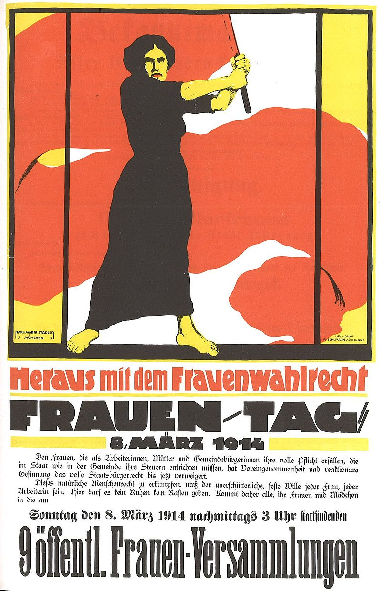
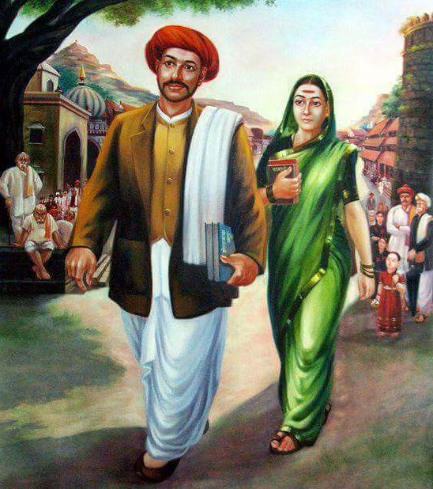

Information Of Womens Day
(Wednesday, 8 March, 2023)
- Information of Womens
- Savitribai Phule
- Rani Lakshmi Bai
International Women's Day (IWD) is a global holiday celebrated annually on March 8 as a focal point in the women's rights movement, bringing attention to issues such as gender equality, reproductive rights, and violence and abuse against women.[3][4] Spurred on by the universal female suffrage movement, IWD originated from labor movements in North America and Europe during the early 20th century.[5][6][7]
The earliest version was purportedly a "Women's Day" organized by the Socialist Party of America in New York City on February 28, 1909. This inspired German delegates at the 1910 International Socialist Women's Conference to propose "a special Women's Day" be organized annually, albeit with no set date;[8] the following year saw the first demonstrations and commemorations of International Women's Day across Europe. After women gained suffrage in Soviet Russia in 1917 (the beginning of the February Revolution), IWD was made a national holiday on March 8;[9] it was subsequently celebrated on that date by the socialist movement and communist countries. The holiday was associated with far-left movements and governments until its adoption by the global feminist movement in the late 1960s. IWD became a mainstream global holiday following its adoption by the United Nations in 1977.[10]
International Women's Day is commemorated in a variety of ways worldwide; it is a public holiday in several countries, and observed socially or locally in others to celebrate and promote the achievements of women.[11]
The UN observes the holiday in connection with a particular issue, campaign, or theme in women's rights.[6] In some parts of the world, IWD still reflects its political origins, being marked by protests and calls for radical change; in other areas, particularly in the West, it is largely sociocultural and centered on a celebration of womanhood.[12]

Savitribai Phule
 Click Here : More InformationSavitribai Phule was a teacher, Indian social reformer, educationalist, and poet from Maharashtra. Along with her husband, Jyotiba Phule in Maharashtra, she played a vital role in improving women's rights in India. She is considered to be the pioneer of India's feminist movement. Savitribai and Jyotiba together founded one of the early modern Indian girls' school in Pune, at Bhidewada in 1848. She strived to abolish discrimination and unfair treatment of people on the basis of caste and gender.
However, In the 19th century, Christian missionaries founded some school for girls in India such as Robert May of the London Missionary Society, who was the first person to open a school exclusively for girls[5] in the region of Chinsurah, Bengal, in 1818. American Christian missionaries established some schools in Bombay, Ahemadnagar. The latter girl's schools inspired Jyotiba Phule to establish a girl's school in Poona.
She attended the Normal school in Poona and American christian missionary Cynthia Farrar's school in Ahmednagar where she attended the course for teachers training.[6]
Details:
| Name: | Savitribai Phule |
| Born : | 3 January 1831 Naigaon, Bombay Presidency, British India (present-day Maharashtra, India) |
| Died: | 10 March 1897 (aged 66) Pune, Bombay Presidency, British India (present-day Maharashtra, India) |
| Occupation(s): | Teacher, activist, social reformer |
Rani Lakshmibai (or Rani Lakshmi Bai) was born on 19 November 1828[4][5] (some sources say 1835)[2][6][7] in the town of Benares (now Varanasi) into a Marathi Karhade Brahmin family.[8] She was named Manikarnika Tambe and was nicknamed Manu.[9] Her father was Moropant Tambe[10] and her mother Bhagirathi Sapre (Bhagirathi Bai). Her parents came from the Tambe village of the Guhagar taluka located in the Ratnagiri district of Maharashtra.[11] Her mother died when she was four years old. Her father was the Commander of the war of Kalyanpranth. Her father worked for Peshwa Baji Rao II of Bithoor district.[12] The Peshwa called her "Chhabili", which means "beautiful " and "lively and cheerful". She was educated at home and was taught to read and write, and was more independent in her childhood than others of her age; her studies included shooting, horsemanship, fencing[13][14] and mallakhamba with her childhood friends Nana Sahib and Tantia Tope.[15][16][dubious – discuss] Rani Lakshmibai contrasted many of the patriarchal cultural expectations for women in India's society at this time.[17] And she was known for her unique perspectives and her courage to fight against social norms even in front of the whole society.
Rani Lakshmibai was accustomed to riding on horseback accompanied by escorts between the palace and the temple, although sometimes she was carried in a palanquin.[18] Her horses included Sarangi, Pavan and Baadal; according to historians she rode Baadal when escaping from the fort in 1858. Her palace, the Rani Mahal, has now been converted into a museum. It houses a collection of archaeological remains of the period between the 9th and 12th centuries AD.
Details:
| Name: | Rani Lakshmi Bai |
| Born: | Manikarnika Tambe 19 November 1828 Benares, Ceded and Conquered Provinces, Company India (present-day Varanasi, Uttar Pradesh) |
| Died: | 10 March 1897 (aged 66) Pune, Bombay Presidency, British India (present-day Maharashtra, India) |
| Occupation(s): | Teacher, activist, social reformer |